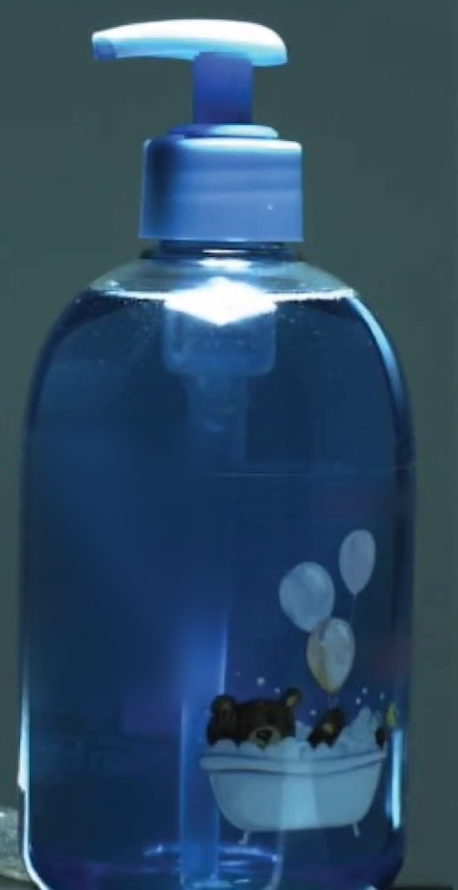

A check for each area of the container
We develop machine vision systems that automatically inspect containers, caps, labels and codes on cosmetics production lines.

123Cap and mouth
Presence, position and integrity of the cap or dispenser.
Pack
Visual container defects, inspected around the entire perimeter.
Label and codes
360° label position and condition; OCR reading and validation of batches and dates.